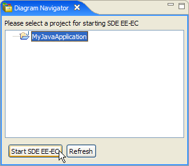

Starting SDE-EC from Diagram Navigator
In this section, you will start SDE for Eclipse from an existing Java project.
Select a Java project inside Diagram Navigator view.
Press the Start SDE-EC button at the bottom of the pane.
